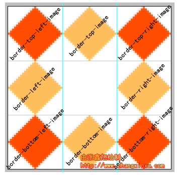
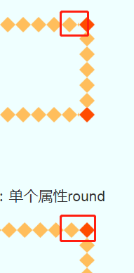

border-image相关属性问题
前言: 本文再看过本文底部参考文章的链接后，对这个CSS属性有了一定的了解
但个人觉得有些地方还是显得连篇累牍，有些很基本的概念解释起来太多了
反而让我有点概念混淆，当然，我也不是说原作者写的不好，原作者对于CSS理解非我所能及
我也从他身上学习了很多东西，所以，学习了之后我要用自己的话说出来。
该属性的兼容性
该属性是CSS3属性中的一员，一些低端浏览器就无缘一见了
适用于：IE11+，Firefox3.5+，chrome或Safari3+浏览器。
图片，剪裁位置，重复性
这是一条标准border-image:url(border.png) 27 repeat
图片:很好理解就是引用路径url(border.png)
裁剪位置: 先说这里的属性值两种情况
1:整数值， 可以取一个值，比如27，默认是像素单位 ，也可以是两个,三个,四个
2:百分比值， 可以写成27%， 在百分数的情况下可以是一个百分数也可以是两个,三个,四个
以上你先记住这两种取值的情况，等等会说两种值是如何裁剪的
请看下图

拿这个9宫格做例子比较好说明， 9宫格的大小是81×81
情况1:取整数的时候怎么裁剪，在一个值27的情况下，假设你现在拿着一把尺子
步骤1:把尺子的0刻度对着9宫格左上角顶点，横着往右量取27像素，再把尺子打竖垂直于27像素这个点，画一条垂直切割线切割这个九宫格
步骤2:接着尺子的0刻度对着9宫格右上角顶点，横着往左也取27像素，再把尺子打竖垂直于27像素这个点，画一条垂直切割线切割这个九宫格
步骤3:接着，再把尺子的0刻度对着9宫格左上角顶点，不过这次往下量取27像素， 再把尺子打横垂直于27像素这个点，画一条垂直切割线切割这个九宫格
步骤4:最后，再把尺子的0刻度对着9宫格左下角顶点，往上量取27像素，再把尺子打横垂直于27像素这个点，画一条垂直切割线切割这个九宫格
假设有两个值得情况下，假设是 27 30的取值下,只有步骤3，步骤4不同, 不同点如下
步骤3:接着，再把尺子的0刻度对着9宫格左上角顶点，不过这次往下量取30像素， 再把尺子打横垂直于27像素这个点，画一条垂直切割线切割这个九宫格
步骤4:最后，再把尺子的0刻度对着9宫格左下角顶点，往上量取30像素，再把尺子打横垂直于27像素这个点，画一条垂直切割线切割这个九宫格
聪明机智的你拿着尺子这样笔画两下估计就知道了：假如只有一个值，那么水平和垂直量取并切割的值都是这个值
如果两个值，那就是第一个值是水平量取切割值，第二个值就是垂直水平量取的值
所以上面例子第一种情况下切出的是9个27×27的小方框
第二种情况是第一排分别是27×30 27×30 27×30
第二排27*21 27*21 27*21
第三排和第一排一样
如果存在3个 4个的情况下，写过CSS的你所了解‘上右下左’规则进行量取和切割
情况2:取百分数的时候怎么裁剪，在一个值20%的情况下，假设你现在拿着一把尺子和一个计算器
步骤1:拿计算器计算图片长×20%，还是九宫格的例子也就是81 * 20% = 16.2 我们就约等于16好了
步骤2:拿计算器计算图片长×20%，还是九宫格的例子也就是81 * 20% = 16.2 我们还是约等于16好了
步骤3:把尺子的0刻度对着9宫格左上角顶点，横着往右量取16像素，再把尺子打竖垂直于16像素这个点，画一条垂直切割线切割这个九宫格
步骤4:接着尺子的0刻度对着9宫格右上角顶点，横着往左也取16像素，再把尺子打竖垂直于16像素这个点，画一条垂直切割线切割这个九宫格
步骤5:接着，再把尺子的0刻度对着9宫格左上角顶点，不过这次往下量取16像素， 再把尺子打横垂直于16像素这个点，画一条垂直切割线切割这个九宫格
步骤6:最后，再把尺子的0刻度对着9宫格左下角顶点，往上量取16像素，再把尺子打横垂直于16像素这个点，画一条垂直切割线切割这个九宫格
聪明的你会发现，这不是和一个整数的情况1一样嘛，只是多了个计算器，哈哈哈没错没错。
能举一反三的你想必猜到了两个百分数值的情况, 就假设20% 30%
步骤1:拿计算器计算图片长×20%，还是九宫格的例子也就是81 * 20% = 16.2 我们就约等于16好了
步骤2:拿计算器计算图片长×20%，还是九宫格的例子也就是81 * 30% = 24.3 我们还是约等于24好了
步骤3，4一样，但是5,6切割的却是24
聪明的你会发现，这不是和一个整数的情况2一样嘛，只是多了个计算器，哈哈哈的却没错没错。
如果存在3个 4个的情况下，写过CSS的你所了解‘上右下左’规则进行计算再量取和切割
掌握好切割很重要，先别急于最后效果如何，最后的效果是按切割的尺寸来展现的，所以你还不太清楚的情况下还是先拿尺子再笔画笔画
在切割的尺寸不超出原图片极限的情况下，一共会切出9个图形,这点怎么论证呢，你假设情况1 的值是82就知道了。
重复
经历过上面的选择图片路径，拿尺子裁剪，切出了9个图形，现在到重复了
重复是什么，你可以想象成这9个图形在你的边框的排布，也就是展现位置
这里的属性值提供三种:repeat(重复)，round(平铺)，stretch(拉伸)
这三种效果虽然存在，但是只作用与切出来9个图形中的五个图形，哪五个呢
你对着9宫格画个十字，知道了吧，左上角右上角左下角右下角那4个为什么不参与效果呢
我也不知道，不过你可以假设他们四个起着鼎定江山的作用，切出来是怎样就最后展现效果就怎样
这里先不说明这三种属性各自带来什么效果，等会看图一看便知
更重要的是用户代理时赋予这个属性值的时候写值的差别
这个属性值也有三种填写方式: 1什么都不写不填，2就填入上述三种属性的其中一个，3任意两种不同的属性随意混合(注重前后顺序)
情况1:什么都不填，默认水平垂直方向都是stretch(拉伸)效果
情况2:填入任意一个那么水平垂直方向都是这个效果，比如只填入repeat，那么水平垂直都是重复效果
情况3:两个值的情况下，第一个值决定水平方向效果，第二个决定垂直方向效果
相信你已经迫不及待了吧，了解了上述的属性知识一起来看效果吧。
相关属性的效果例子
简单起见取得是单个整数，更多不同的切割方法可自行去试试
border-image: url(九宫格) 27;
切割方式采取情况1：一个整数
重复效果采取情况1：不填，所以默认stretch(拉伸)
border-image: url(九宫格) 27 repeat;
切割方式采取情况1：一个整数
重复效果采取情况2：单个属性repeat
border-image: url(九宫格) 27 round;
切割方式采取情况1：一个整数
重复效果采取情况2：单个属性round
repeat和round其实很像，但是有区别，请看下图

repeat把这个切割块一直重复重复重复，最后发现位置不够了，咋办，所以最后一个重复被咔嚓变小变形了
round把这个切割块通过计算到刚好能完全重复不变形的地步，然后也是重复重复，有点自适应的意思在里面
border-image: url(九宫格) 27 repeat stretch;
切割方式采取情况1：一个整数
重复效果采取情况1：两个属性 repeat stretch
border-image: url(九宫格) 27 repeat round;
切割方式采取情况1：一个整数
重复效果采取情况1：两个属性 repeat round
个人总结
这个属性非常好用，用起来的效果当然非常炫酷
本文是在参考文章的阅读之后进行的个人理解，旨在自我梳理以及和大家交流。